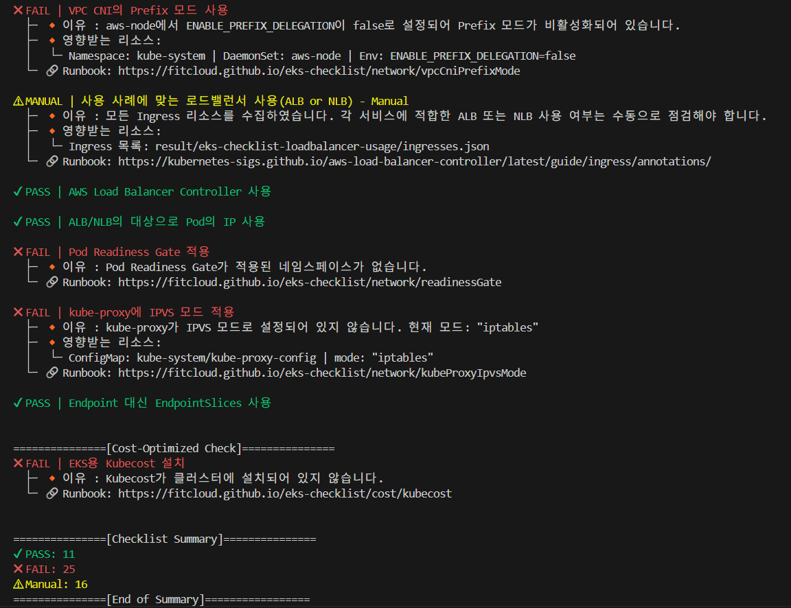

EKS-Checklist

EKS-Checklist는 Amazon EKS (Elastic Kubernetes Service) 클러스터의 설정과 상태를 자동으로 점검하여, 운영자가 클러스터의 구성을 파악하여 최적화, 보안, 비용 절감, 안정성을 개선 할 수 있도록 EKS 클러스터 검사 도구입니다.
이 도구는 Go 언어로 작성되었으며, AWS SDK for Go, Kubernetes Go Client, 그리고 CLI 명령어 프레임워크인 Cobra를 활용하여 제작되었습니다.
✅ 프로젝트 목적
EKS Checklist는 EKS Cluster의 문제를 사전에 식별하고 개선할 수 있도록 설계된 도구입니다. AWS 및 Kubernetes의 모범 사례(Best Practices)를 기반으로 클러스터 상태를 분석하고, 점검을 통해 식별된 모든 Fail 결과에 대해 의미 있는 Runbook을 제공하여 사용자가 신속하게 문제를 해결하고 보다 안정적이고 효율적인 Cluster 환경을 구축하는 것을 목표로 합니다.
🔍 점검 항목
| 카테고리 | 설명 |
|---|---|
| 비용 최적화 (Cost) | 클러스터 리소스 최적화를 통해 과도한/미사용 리소스 확인, 고사양/미사용 인스턴스를 탐지를 통한 절감 방안 식별 |
| 일반 설정 (General) | 클러스터 버전, 태그 구성, 메타데이터 등 기본적인 구성이 모범사례에 맞게 구성되어 있는지 확인 |
| 네트워크 (Network) | VPC, Subnet, 보안 그룹, ENI, IP 할당 등의 네트워크 구성 요소가 최적화되어 있는지 점검 |
| 확장성 (Scalability) | HPA (Horizontal Pod Autoscaler), Cluster Autoscaler, 노드그룹 등 클러스터의 확장성과 자원 관리의 자동화를 위한 설정 점검 |
| 보안 (Security) | IAM 정책, 인증 구성, API 서버 접근 제어 등 보안 관련 설정이 적절히 되어 있는지 점검하여 클러스터의 보안 설정 확인 |
| 안정성 (Reliability) | 로그, 모니터링, 백업 설정 등의 설정 유무를 점검하여 클러스터의 안정성 진단 |
📋 요구 사항
도구를 사용하기 위해 다음 환경이 준비되어 있어야 합니다:
AWS CLI 설치: 공식 문서 참고
- 인증: aws configure 명령어로 설정 (Access Key, Secret, Region 등)
- 클러스터와 연결된 kubeconfig가 설정되어 있어야 함니다
EKS 클러스터 접근 권한 - IAM Role 또는 User가 EKS 클러스터 및 리소스에 접근 가능한 권한이 있어야 합니다.
📦 설치 방법
GitHub Releases에서 바이너리 다운로드
- GitHub의 Releases 페이지로 이동합니다.
- 운영 체제에 맞는 바이너리 파일을 다운로드합니다
- macOS:
eks-checklist-darwin-amd64 - Linux:
eks-checklist-linux-amd64 - Windows:
eks-checklist-windows-amd64.exe
💻 플랫폼별 설치 예시
Linux
wget https://github.com/fitcloud/eks-checklist/releases/download/{version}/eks-checklist-linux-amd64
chmod +x eks-checklist-linux-amd64
sudo mv eks-checklist-linux-amd64 /usr/local/bin/eks-checklist
eks-checklist
curl -LO https://github.com/fitcloud/eks-checklist/releases/download/{version}/eks-checklist-darwin-amd64
chmod +x eks-checklist-darwin-amd64
sudo mv eks-checklist-darwin-amd64 /usr/local/bin/eks-checklist
eks-checklist
- .exe 파일을 다운로드하여 예: C:\Program Files\EKS-Checklist\에 저장합니다.
- 명령 프롬프트 또는 PowerShell에서 다음과 같이 실행합니다:
🚀 사용 방법
기본 사용 예시
주요 옵션 설명| 옵션 | 설명 |
|---|---|
--context |
사용할 kubeconfig context 이름 |
--kubeconfig |
kubeconfig 파일 경로 (기본: 사용자 홈 디렉토리 경로) |
--profile |
사용할 AWS CLI 프로파일 이름 |
--output |
출력 형식 지정 (text, html) |
--filter |
결과 필터링 옵션 (all, pass, fail, manual) |
--sort |
결과를 상태별 정렬 (pass, fail, manual) |
--help 또는 -h |
도움말 출력 |
출력 예시 도구 실행 결과는 다음과 같은 방식으로 정리됩니다: 